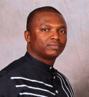
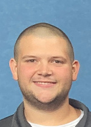

Principal Investigator
Dr. Yang Xiao, Assistant Professor of Chemical Engineering
More info about Dr. Xiao here. Curriculum Vitae.
More group photos here.
Graduate Students

Tobias K. Misicko, Ph.D. student, (6/2022 - present), B.S. in Chemical Engineering, Purdue University, West Lafayette, Indiana, U.S.A.

Joaquin Herrero, Ph.D. student, (3/2024 - present), B.S. in Chemical Engineering, Purdue University, West Lafayette, Indiana, U.S.A.

Jiaping Weng, Ph.D. student, (3/2024 - present), B.S. in Environment Engineering, Changzhou University, Changzhou, China
Kritik Saxena, Ph.D. student, (9/2024 - present), B.S. in Mechanical Engineering, Medicaps Institute of Technology and Management, Indore, India; M.S. in Manufacturing Technology, National Institute of Technology, Calicut, India.
Henrik Ketting, M.S. student, (3/2023 - present), B.S. in Petrochemical Engineering, Kwame Nkrumah University of Science and Technology, Kumasi, Ghana; M.S. in Engineering Management, University of Hull, Hull, U.K.
Thapaswi Movva, M.S. student, (3/2024 - present), B.S. in Computer Science, Jawaharlal Nehru Technological University, Hyderabad, India
Xiaoyang Gao, Ph.D. student, (9/2022 - present, Co-advised by Prof. Mainardi), B.S. in Chemical Engineering, Beijing University of Chemical Technology, Beijing, China; M.S. in Chemical Engineering, McNeese State University, Lake Charles, Louisiana, U.S.A.

Gabriel Chukwuka, M.S. student, (2023 - present, Co-advised by Prof. Mainardi), HND in Chemical Engineering, Institute of Management & Technology, Nigeria; B.Th and M.Th Degree in Chemical Engineering, Durban University of Technology (DUT), South Africa; MBA, University of KwaZulu-Natal, South Africa.
Undergraduate Students

Robert Martin, Undergraduate Student, 3/2023 - present, Louisiana Tech University

Piper Smith, Undergraduate Student, 9/2023 - present, Louisiana Tech University

Caroline Cresap, Undergraduate Student, 9/2023 - present, Louisiana Tech University
Jacob Robinson, Undergraduate Student, 7/2024 - present, Louisiana Tech University

Kaleigh Louque, Undergraduate Student, 9/2024 - present, Louisiana Tech University

Gregory Allen, Undergraduate Student, 9/2024 - present, Louisiana Tech University
Suraj Dahal, Undergraduate Student, 9/2024 - present, Louisiana Tech University
Sudip Regmi, Undergraduate Student, 9/2024 - present, Louisiana Tech University
Group Alumni
Mir (Zayd) Ali, High School Student, 6/2023-7/2023, El Dorado High School, El Dorado, Arkansas
Brady Duplessis, Undergraduate Student, 9/2022-5/2023, Louisiana Tech University
Paul Macip, Undergraduate Student, 9/2022-5/2023, Louisiana Tech University
Jacob Christ, Undergraduate Student, 12/2022 - 9/2023, Louisiana Tech University
Sarah Siharath, Undergraduate Student, 3/2023 - present, Louisiana Tech University
Sean Clay, Undergraduate Student, 12/2023 - present, Louisiana Tech University